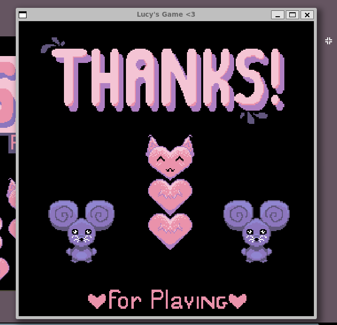
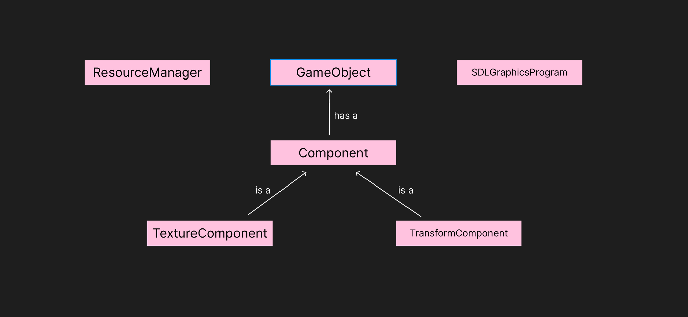

|
Lucy's Game Engine
|
This is my final for game engines at Northeastern University. I created a C++ game engine that create levels of Snake! There is a GUI that supports users placing snakes and fruits in different locations. Users can also add additonal functionality using python scripting, if they want more control over a level. The base classes for a snake and fruit were created using python scripting as well.

Click the image above to watch a run through!

If I were to continue development on this project I would first focus on redoing the GUI. I was unaware that we could use a tool like Unity for this, so I would remake my GUI using this tool as I am far more experienced with Unity UI and could make a much better program with it. While I’m happy with the UI I was able to create using wxWidgets, it could be far more interesting and a better user experience if I knew Unity was an option. Next I would work on adding more component support so the user has a bit more support when implementing more complex gameplay via pybind. Looking into chase, projectiles, script, and other general components that implement a lot of base logic to make this engine more extensible and requires less work from the developer. Lastly I would like to move my scene loading system into the cpp engine vs how it currently sits in python. While this works and gets the job done it adds extra work for the user that I would like to alleviate.